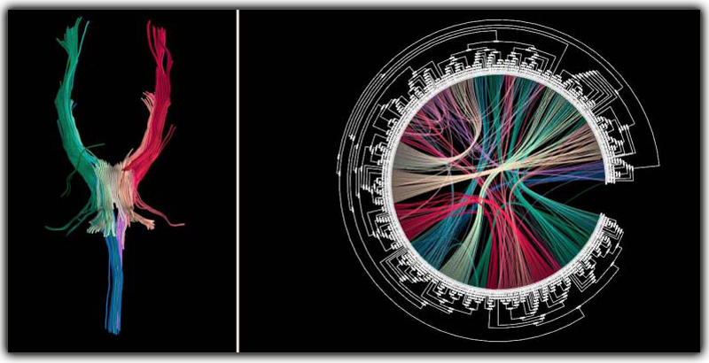

|
3D model of white matter structures in the brain (left) linked to a planar circular map of brain connectivities (right). The connectivity graph is obtained by first clustering end points of all white matter tracts (two points for each 3D curve on the left) using hierarchical clustering, representing the clustering tree radialy, and then superimposing the pair-wise tract connectivities using hierarchical edge bundling. |